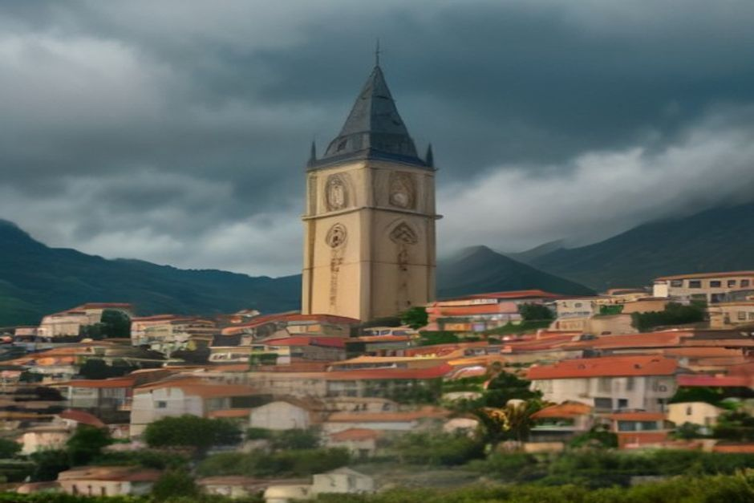
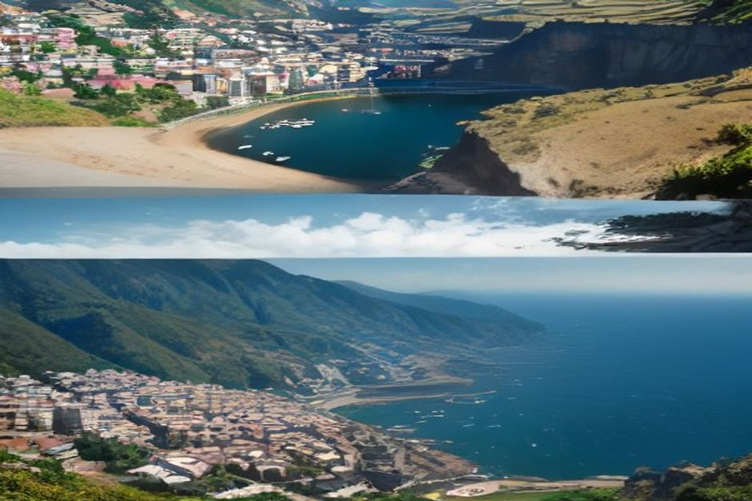

Madeira is 57 kilometres long, yet it can be blazing sun on one coast and thick cloud on the other at the same hour. That's not bad luck — it's geography. Here's why, and what it means for planning your trip.
Why does Madeira have so many different microclimates?
Madeira's weather changes by altitude and coast because a wall of mountains up to 1,862 metres (Pico Ruivo) splits a small island in two. Moist air blowing in on the northeast trade winds hits that wall, rises, cools and drops its rain on the north side and the peaks. By the time the same air crosses to the south coast, it has dried out and warmed on the way down. The result is a textbook orographic effect, compressed into an island you can drive across in ninety minutes.

Why is Funchal sunny while Santana is raining?
Funchal sits on the south coast in the rain shadow of that central range, which is exactly why it's the driest, sunniest part of Madeira and why the capital, the airport and the marina all ended up there. Santana and the rest of the north coast face the trade winds directly, so they catch the moisture first — greener, cooler, and considerably wetter, often under a grey sky while the south stays clear. Locals plan day trips around this constantly: if the north looks closed in, the south coast is usually still open.
Why is it colder and cloudier up at Pico do Arieiro and Monte?
Temperature drops roughly 0.6°C for every 100 metres of elevation, so the mountains run 8-10°C cooler than Funchal on an average day, and the "sea of clouds" phenomenon — a solid cloud layer sitting between roughly 1,000 and 1,400 metres — regularly separates a sunny summit from an overcast town below it. Monte, at around 570 metres above Funchal, sits inside that cloud band often enough that it's visibly cooler and mistier than the marina just minutes away by cable car.
Is the north coast really rainier than the south?
Yes, by a wide margin — parts of the north coast and the interior mountains can receive three to four times the annual rainfall of Funchal, which averages under 600mm a year. Porto Moniz, São Vicente and Santana are all noticeably greener and lusher than the south for this exact reason: more rain grows more laurel forest. It's the same island, but it's effectively two different climates separated by a mountain range you can see from the water.
What does this mean for a boat trip from Funchal?
It means the marina sits in the one part of Madeira where the weather is most reliable. A forecast that looks unsettled for "Madeira" as a whole is often describing the north coast or the mountains, not the water off Funchal, Câmara de Lobos or Cabo Girão. What actually decides whether a private boat trip with Chifbay goes ahead is wind direction and swell, not a passing cloud over Monte — our skippers read the coastal conditions on the day and adjust the route or timing rather than cancelling on a rumour of rain forty minutes inland.
When is Madeira's weather most stable?
Late spring through early autumn — roughly May to October — brings the steadiest run of dry, warm days on the south coast, with sea temperatures comfortable enough for swimming from June onward. Winter is milder than most of Europe (rarely below 14-15°C in Funchal) but brings more frontal systems, so it's the season where checking a short-range coastal forecast actually matters.
Why is Madeira called "the island of eternal spring"?
Because the Gulf Stream and its subtropical latitude keep the south coast hovering around 18-24°C for most of the year, without the summer extremes or hard winters of mainland Portugal. It's this stability — not an absence of weather, but a narrow, predictable band of it — that gives Funchal its reputation, and its year-round garden city feel.
What should I pack for Madeira's changeable weather?
A light layer and something waterproof for the mountains, even in summer, plus normal warm-weather clothing for the coast — the two microclimates genuinely call for two different packing lists. If your plans include the water, pack for the south coast's conditions rather than whatever the general island forecast says, since that's usually describing somewhere else entirely.

Ask what the weather is doing "in Madeira" and the honest answer is: which part?
The mountains catch the rain so the coast doesn't have to. That's the trade-off that makes Funchal's waterfront one of the most dependable places in Europe to plan a day on the water — cloud over Pico do Arieiro included.